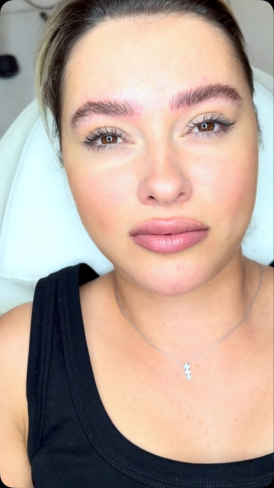
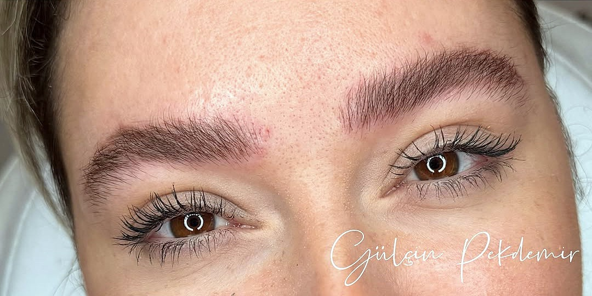
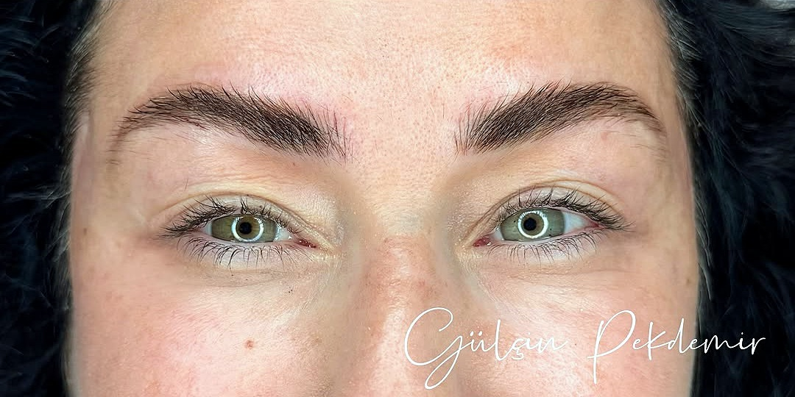
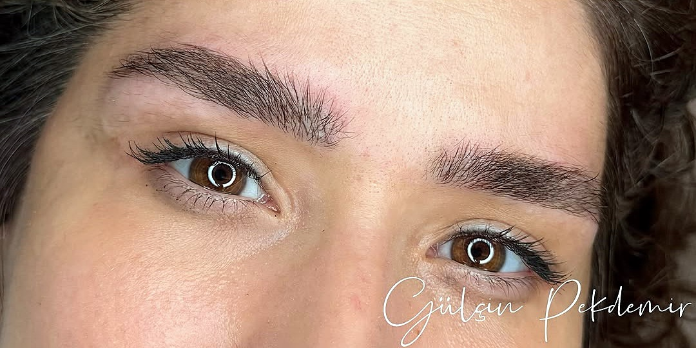
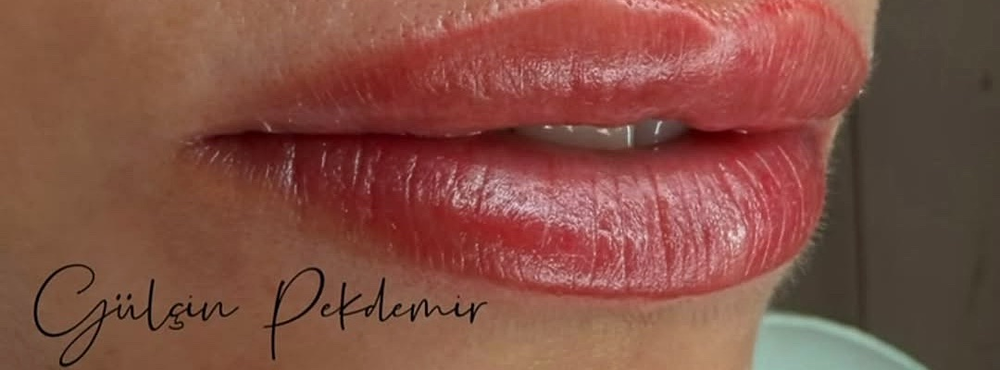
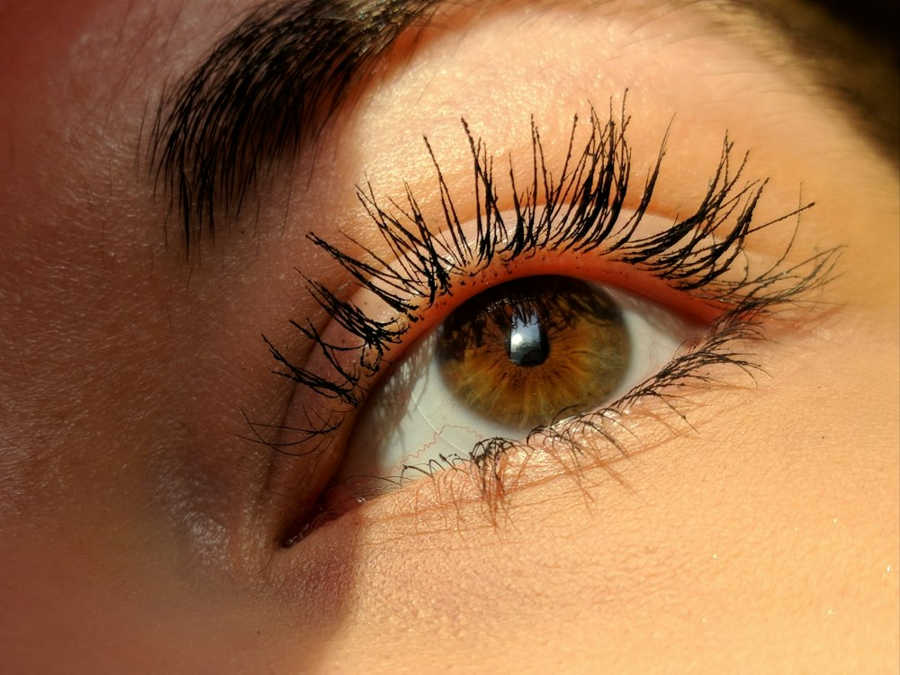

Kendi kaşınızdan ayırt edilemeyecek kadar doğal.
Güzellik uzmanı Gülçin Pekdemir Çerikan ile kişiye özel kaş tasarımı, 4D/6D microblading, dudak renklendirme ve kalıcı makyaj. Yüz ifadenize uyan ince bir dokunuş.


Yüzünüze göre tasarlanır
Her uygulama, yüz hatlarınız ve istediğiniz görünüm birlikte değerlendirilerek planlanır. Bilgi ve randevu için WhatsApp’tan yazın.
Kaşın formu, kalınlığı ve yayı; yüz hatlarınız ve ifadeniz dikkate alınarak ölçülendirilir. Uygulama öncesinde çizim üzerinde birlikte karar verilir.
- Yüz oranlarına göre ölçülendirme
- Ön çizim ve onay
- Microblading öncesi ilk adım

Seyrek bölgeler, kendi kaş kıllarınızı taklit eden ince çizgilerle tamamlanır. Hedef; kimsenin microblading olduğunu anlamayacağı kadar doğal bir sonuç.
- Kıl tekniği (4D/6D)
- Seyrek ve boş alanların tamamlanması
- Kişiye özel renk seçimi

Renkten çok şekil ve kontura odaklanır. Seçilen ton çoğunlukla kendi dudak renginize yakındır; sabah uyandığınızda da bakımlı ve formlu bir görünüm hedeflenir.
- Doğal ton veya lipstick etkisi
- Kontur ve simetri
- Kişiye özel renk seçimi

Kirpik diplerini belirginleştiren ince dipliner ya da daha belirgin bir eyeliner. Günlük makyaj süresini kısaltan, göz şeklinize uygun bir çizgi.
- İnce dipliner
- Eyeliner
- Göz şekline uygun tasarım

Kaşların bakımına yönelik destekleyici uygulama. Hangi uygulamanın size uygun olduğu ön görüşmede belirlenir.
Bilgi ve randevu →Farkı kaydırarak görün
Kıl tekniğiyle çizilen her çizgi kendi kaşınızın yönünü takip eder. Kaydırın; renk ve çizgilerin kendi kaşlarınızla nasıl bütünleştiğine yakından bakın.
- 1İnce çizgilerKendi kaş kıllarınızın yönünde, tek tek.
- 2Yüzünüze uygun formYüz oranlarına göre ölçülendirme.
- 3Doğal tonSaç ve cilt renginize uygun pigment.
Görsel, Gülçin Pekdemir’in kendi çalışmasıdır. Sonuçlar cilt yapısına göre farklılık gösterebilir.
Son çalışmalar
Adım adım
Ön görüşme
Beklentiniz, cilt yapınız ve istediğiniz görünüm konuşulur.
Tasarım
Yüz oranlarına göre ölçülendirme ve çizim; onayınızla ilerlenir.
Uygulama
Kişiye özel renk ve teknikle özenli uygulama.
Bakım & rötuş
Bakım önerileri paylaşılır; gerekirse rötuş planlanır.
Merak edilenler
Microblading doğal görünür mü?
Kıl tekniğinde çizgiler kendi kaş kıllarınızın yönünü takip eder; hedef, dışarıdan fark edilmeyecek kadar doğal bir görünümdür.
Dudak renklendirmede renk çok belirgin olur mu?
Tercihe göre değişir. Çoğunlukla kendi dudak tonunuza yakın bir renk seçilir; odak şekil ve konturdur. İsterseniz daha belirgin bir lipstick etkisi de planlanabilir.
Rötuş gerekiyor mu?
Cilt yapısına göre değişir. İyileşme sonrası gerekirse rötuş planlanır; ayrıntılar ön görüşmede paylaşılır.
Nasıl randevu alabilirim?
WhatsApp’tan ya da 0533 056 19 14 numarasından ulaşabilirsiniz. Pazartesi–cumartesi 10.00–19.00 arası randevuyla hizmet verilir.